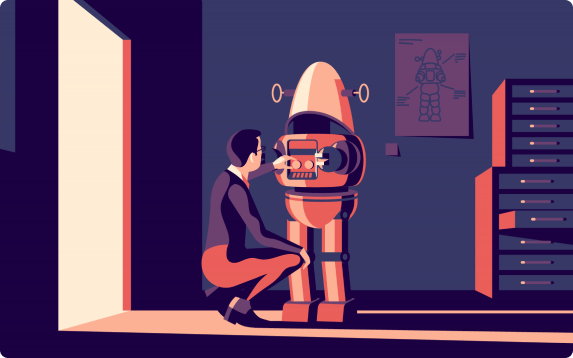

New
Our latest web design tips, tricks, insights, and resources, hot off the presses.
Home — New

How to Reinstall WordPress: 5 Different Methods Depending On Your Needs
User research is the reality check every project needs. Here’s our guide to why you should be doing it — and how to get started.

Web page layout 101: website anatomy every designer needs to learn
User research is the reality check every project needs. Here’s our guide to why you should be doing it — and how to get started.
Website Downtime: Applicable Tips on How to Prevent It
User research is the reality check every project needs. Here’s our guide to why you should be doing it — and how to get started.
6 Ways to Leverage Facebook for Marketing Success
User research is the reality check every project needs. Here’s our guide to why you should be doing it — and how to get started.
Updating WooCommerce: A Safe and In-Depth Guide
User research is the reality check every project needs. Here’s our guide to why you should be doing it — and how to get started.
WP-CLI v2 – Managing WordPress From the Terminal
User research is the reality check every project needs. Here’s our guide to why you should be doing it — and how to get started.
Social Media Image Sizes and Quick Tips for WordPress Users
User research is the reality check every project needs. Here’s our guide to why you should be doing it — and how to get started.
How to Create Outstanding Long-Form Articles in WordPress
User research is the reality check every project needs. Here’s our guide to why you should be doing it — and how to get started.
How to Use Fiverr to Reduce Business Busywork
User research is the reality check every project needs. Here’s our guide to why you should be doing it — and how to get started.
Email Marketing Best Practices for Sending Better Emails
User research is the reality check every project needs. Here’s our guide to why you should be doing it — and how to get started.

Google Site Verification: 7 Ways to Verify With Search Console
User research is the reality check every project needs. Here’s our guide to why you should be doing it — and how to get started.
Twitter Marketing Strategies to Beef up Your Social Game
User research is the reality check every project needs. Here’s our guide to why you should be doing it — and how to get started.
The Ultimate Step-by-Step Guide on Website Usability Testing
User research is the reality check every project needs. Here’s our guide to why you should be doing it — and how to get started.
8 Ways To Leverage LinkedIn for Marketing Success
User research is the reality check every project needs. Here’s our guide to why you should be doing it — and how to get started.
All topics
Announcements
Get free web design insights...
In your inbox, every other week. And unsubscribe in a click, if you want.
All Rights Reserved 2018 3layers